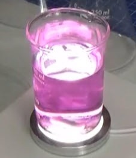
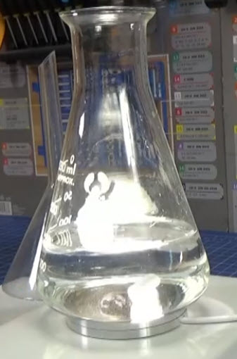
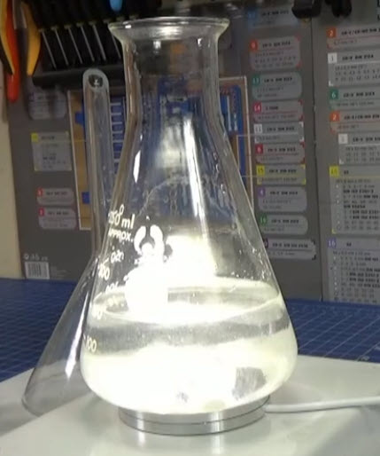
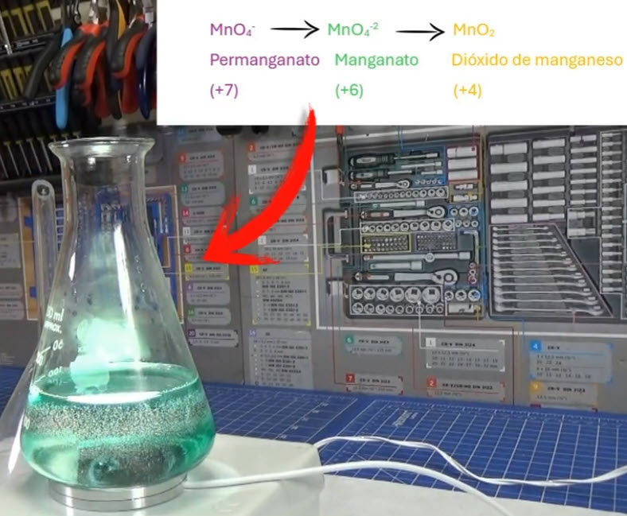
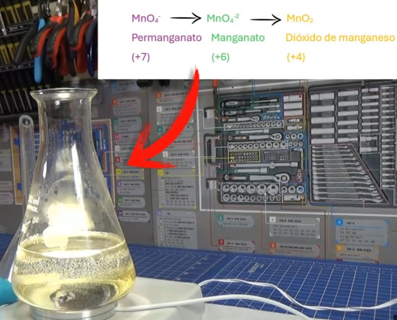

IES Valle del Alberche

📋 ¿En qué consiste la práctica?
Vamos a preparar la conocida como "reacción camaleón": una disolución que cambia de color morado → verde → amarillo-ocre ante nuestros ojos, sin que tengamos que añadir nada nuevo. El truco está en tres ingredientes: permanganato de potasio (KMnO₄), hidróxido de sodio (NaOH) y sacarosa (el azúcar de mesa).
El manganeso del permanganato está en su estado de oxidación máximo, +7, y tiene "hambre de electrones". La sacarosa, en medio básico, se los va cediendo poco a poco. Cada vez que el manganeso gana electrones baja de estado de oxidación y, como consecuencia, cambia de color. Primero pasa a +6 (verde) y después a +4 (amarillo-ocre). Como un camaleón, la disolución se transforma sin parar.
¿Por qué una misma disolución cambia de color varias veces si no le añadimos nada nuevo?
🎯 ¿Qué vas a aprender?
- Qué son las reacciones redox y cómo se identifica quién se oxida y quién se reduce.
- A calcular estados de oxidación y a relacionarlos con el color de una especie química.
- Por qué el medio básico (el NaOH) es imprescindible para que aparezcan el verde y el amarillo.
- Por qué la sacarosa hace que el cambio sea lento y observable, mientras que otros azúcares lo aceleran demasiado.
- La importancia de la estequiometría: identificar el reactivo limitante y entender por qué basta con dos granos de KMnO₄.
- A manejar material de laboratorio con seguridad: vaso de precipitado, matraz Erlenmeyer, agitador magnético y reactivos corrosivos.
🔬 Fundamento teórico
El KMnO₄ es una sal de color morado muy intenso. Al disolverse en agua se separa en iones potasio (K⁺) y en el ion permanganato (MnO₄⁻), que es el responsable del color.
En el ion permanganato, el manganeso tiene estado de oxidación +7, el más alto que puede alcanzar. Eso significa que ya ha "cedido" todos los electrones que puede ceder: solo le queda ganar electrones. Por eso el KMnO₄ es un oxidante muy fuerte.

La sacarosa (C₁₂H₂₂O₁₁) es el azúcar de mesa. Si la miras en un libro de texto, verás que se dice que es un azúcar no reductor: sus dos carbonos anoméricos están unidos entre sí y no tiene ningún grupo aldehído o cetona libre capaz de ceder electrones con facilidad.
Sin embargo, en una disolución concentrada de NaOH ocurre algo importante: la sacarosa se hidroliza (se rompe) lentamente en glucosa + fructosa. Y estos dos azúcares sí son reductores, porque tienen grupos carbonilo libres. En ese momento empiezan a ceder electrones al manganeso.
El NaOH no es un simple "ayudante": decide el producto final de la reducción del permanganato. El pH del medio determina hasta dónde puede bajar el manganeso:
| Medio | Producto de la reducción | Estado de oxidación del Mn | Color |
|---|---|---|---|
| Muy ácido | Mn²⁺ | +2 | Casi incoloro (rosa pálido) |
| Neutro / poco básico | MnO₂ | +4 | Marrón oscuro / ocre |
| Muy básico (nuestro caso) | MnO₄²⁻ (intermedio) → MnO₂ | +6 → +4 | Verde → amarillo-ocre |
Con 5 g de NaOH en 150 mL de agua partimos de una concentración aproximada de 0,83 mol/L (pH ≈ 13,7). Ese exceso enorme de base es lo que hace posible que el manganato (MnO₄²⁻, verde) sea lo bastante estable como para que lo veamos antes de que se transforme en dióxido de manganeso.
Al verter el permanganato sobre la disolución básica de azúcar, el manganeso va ganando electrones en dos etapas bien diferenciadas:

El proceso es reversible en apariencia (los colores "vuelven" si agitas o si añades más permanganato), pero en realidad es una reducción progresiva: el manganeso solo puede bajar, nunca subir solo.
En una reacción redox conviene separar lo que le pasa al oxidante y lo que le pasa al reductor. El manganeso se reduce en dos pasos:
\[ \mathrm{MnO_4^- + e^- \rightarrow MnO_4^{2-}} \] Morado (+7) → Verde (+6)
\[ \mathrm{MnO_4^{2-} + 2H_2O + 2e^- \rightarrow MnO_2 + 4OH^-} \] Verde (+6) → Amarillo-ocre (+4)
La sacarosa, por su parte, se oxida. En medio básico fuerte acaba convertida en carbonato (CO₃²⁻), cediendo 48 electrones por molécula:
Combinando ambas semirreacciones se obtiene la ecuación iónica global ajustada:
Fíjate en el dato clave: hacen falta 16 iones permanganato por cada molécula de sacarosa. Eso explica por qué el KMnO₄ es el reactivo limitante y por qué dos granos son suficientes para toda la disolución.
Porque, igual que el animal cambia de color para adaptarse al entorno, esta disolución cambia de color sin que añadamos nada nuevo. Todo lo que ocurre es un intercambio interno de electrones entre la sacarosa (que se oxida) y el manganeso (que se reduce).
⚙️ Materiales y reactivos
- Vaso de precipitado de 200 mL (para la disolución de KMnO₄).
- Matraz Erlenmeyer de 250 mL (para la disolución básica de azúcar).
- Agitador magnético con imán (barra magnética).
- Vidrio de reloj o papel para pesar los sólidos.
- Balanza granataria (precisión 0,1 g; si es analítica, mejor).
- Probeta de 100 mL o vaso graduado para medir el agua.
- Espátula, varilla de vidrio y guantes de nitrilo.
- Gafas de seguridad y bata.
| Reactivo | Masa / volumen | Moles aproximados | ¿Es crítico? |
|---|---|---|---|
| KMnO₄ | 1–2 granos (≈ 0,010–0,020 g) |
≈ 0,06–0,13 mmol | Sí (moderadamente). Es el reactivo limitante: conviene que sea poco. Si te pasas, el morado tapa el verde y se forma tanto MnO₂ que la disolución queda opaca. |
| NaOH | 5 g | 125 mmol | No crítico. Exceso enorme (≈ 2.500×) sobre lo que consume la reacción. Solo debe haber suficiente para mantener pH > 13 y que el verde aparezca. |
| Sacarosa | 2 g | 5,8 mmol | No crítico. Exceso de ≈ 1.000×. Solo reaccionan realmente unos 2 mg. Más cantidad acelera el proceso pero no altera el resultado. |
| Agua | 150 mL (Erlenmeyer) + ≈ 50 mL (vaso) |
— | No crítico. Determina la concentración y, por tanto, la intensidad de los colores. |
Con 0,015 g de KMnO₄ (≈ 0,095 mmol) se necesitarían
\( 0{,}095/16 = 0{,}0059 \text{ mmol de sacarosa} = \mathbf{2{,}0\ mg} \).
Como tenemos 2 000 mg, la sacarosa está en exceso de ≈ 1 000 veces.
Para oxidar los 2 g completos harían falta 14,8 g de KMnO₄: por eso basta con dos granos.
- Prepara la disolución de permanganato: pon 1–2 granos de KMnO₄ en el vaso de precipitado con ≈ 50 mL de agua y agita con la barra magnética hasta disolverlos por completo. Obtendrás una disolución morada intensa.
- Pon 150 mL de agua en el matraz Erlenmeyer.
- Añade al Erlenmeyer los 5 g de NaOH y los 2 g de sacarosa. Agita hasta que todo se disuelva. La disolución será incolora (¡ojo, el vaso se calienta!).
- Vierte un poco (unos pocos mL) de la disolución morada de KMnO₄ en el Erlenmeyer. Vuelve a colocar el matraz sobre el agitador.
- Observa y cronometra: el color morado desaparece casi de inmediato y aparece un verde intenso.
- Deja el agitador en marcha y sigue observando: en unos minutos el verde vira a amarillo-ocre (MnO₂ en suspensión).



Pocos segundos después de verter el permanganato, la disolución se vuelve verde esmeralda. La sacarosa (ya parcialmente hidrolizada) ha cedido un electrón a cada ion permanganato, que pasa de Mn +7 a Mn +6 y se convierte en ion manganato, MnO₄²⁻.

Si sigues agitando, el verde va apagándose y la disolución toma un tono amarillo-ocre (a veces descrito como marrón claro o mostaza). El manganato ha ganado dos electrones más y ha pasado a Mn +4, formando dióxido de manganeso, MnO₂, que queda en suspensión coloidal y por eso se ve amarillento en lugar de negro.

- Cambiar el azúcar: repite con glucosa, fructosa o zumo de fruta. ¿Cuánto tarda en aparecer el verde? ¿Y el amarillo?
- Cambiar la temperatura: prueba a 5 °C (baño de hielo) y a 40 °C (baño María). Cronometra cada etapa.
- Quitar el NaOH: haz la prueba sin hidróxido de sodio. ¿Aparece el verde? ¿Por qué no?
- Cambiar la concentración de KMnO₄: con un solo grano el verde dura más; con cinco, el morado tarda en desaparecer.
- Añadir más permanganato cuando ya está amarillo: ¿vuelve a aparecer el morado? ¿Se puede "reiniciar" el camaleón?
- Medir el pH: con papel indicador o pH-metro, comprueba que el medio se mantiene básico durante toda la experiencia.
📊 ¿Qué has demostrado?
El "camaleón químico" es una reacción redox en la que el manganeso va ganando electrones de la sacarosa y baja progresivamente de estado de oxidación, cambiando de color en cada etapa.
Morado (Mn +7) → Verde (Mn +6) → Amarillo-ocre (Mn +4).
Además, has comprobado que:
- El color de una especie química depende de su estado de oxidación: el mismo elemento (Mn) da tres colores completamente distintos según cuántos electrones tenga.
- El medio básico es imprescindible: es lo que permite que el manganato (verde) sea observable y lo que hidroliza la sacarosa para que pueda ceder electrones.
- La sacarosa es un reductor "lento" porque primero tiene que hidrolizarse: por eso los cambios de color se pueden seguir a simple vista.
- El KMnO₄ es el reactivo limitante: dos granos bastan para toda la disolución porque la estequiometría exige 16 iones permanganato por cada molécula de sacarosa.
- La agitación constante es clave para que el cambio de color sea homogéneo y no aparezcan "nubes" verdes o motas marrones.
🧪 DESMITIFICANDO el camaleón químico Pulsame
Enunciado: Calcula el estado de oxidación del manganeso en KMnO₄, K₂MnO₄ y MnO₂. Indica cuántos electrones gana el manganeso en cada salto y relaciona cada estado con el color observado.
Enunciado: Un compañero propone hacer la práctica sin hidróxido de sodio, "para ver si sale igual". ¿Qué ocurriría? Explica el papel del medio básico.
Enunciado: La sacarosa es un azúcar no reductor. Sin embargo, en esta práctica actúa como reductora. Explícalo y razona por qué se elige sacarosa en lugar de glucosa para hacer la demostración.
Enunciado: Partimos de 0,015 g de KMnO₄, 5 g de NaOH y 2 g de sacarosa. Sabiendo que la ecuación global es
C₁₂H₂₂O₁₁ + 16 MnO₄⁻ + 8 OH⁻ → 12 CO₃²⁻ + 16 MnO₂ + 15 H₂O,
determina el reactivo limitante y la masa de sacarosa que realmente reacciona.
Enunciado: La práctica se hace siempre con agitador magnético. ¿Qué pasaría si vertiéramos el permanganato y dejáramos el matraz en reposo?
Enunciado: Si en lugar de dos granos echamos una cucharadita de KMnO₄, la experiencia no funciona bien. Explica por qué, apoyándote en la estequiometría y en la óptica.
Enunciado: El cambio de color del permanganato no es solo un truco vistoso. Nombra al menos tres aplicaciones reales del comportamiento redox del KMnO₄ y explica en qué se basa cada una.
Dos granos de permanganato, azúcar y sosa: tres colores y una sola reacción redox.
(Los detalles sobre lo que entra en las pruebas escritas se publicarán periódicamente en M.Teams).